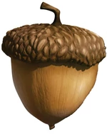

Популярный миф про белок

В преддверии зимы белки (лат. Sciurus) становятся особо активными: вы можете увидеть их в лесу или в парке, лавирующих между деревьями легкими прыжками и то и дело останавливающихся, чтобы спрятать орехи или другие лакомства. Еще бы: грядут холода, плодородная осень скоро кончится, и нужно накопить достаточно запасов для пропитания, ведь в зимнюю спячку эти грызуны не впадают. Белки крайне редко прячут весь запас в одном месте: это очень рискованно. Чаще всего тайники располагаются в совершенно разных местах, расположенных на обширных территориях. Некоторые виды белок закапывают еду в землю, другие прячут ее в дуплах деревьев. Последняя тактика, как недавно выяснили ученые, может вредить деревьям. А вот оставленные в земле семена нередко прорастают, давая жизнь новым растениям. Ранее биологи думали, что в этих случаях белки просто забывают о своих тайниках, либо же не могут их найти, но несколько исследований, посвященных поведению этих грызунов, опровергли гипотезу.
Читать далее